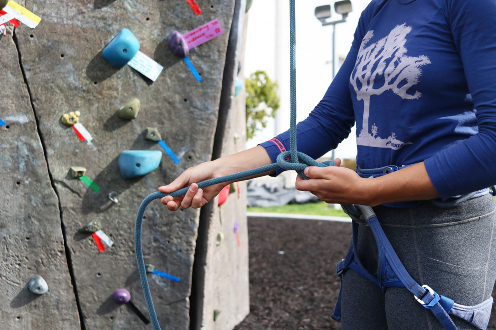
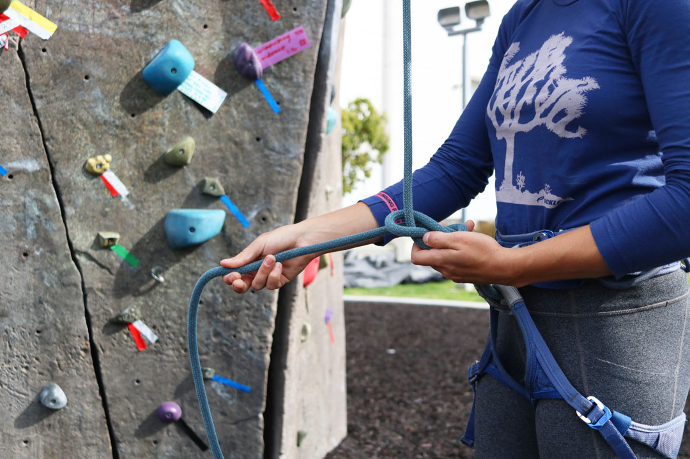

Cal Poly San Luis Obispo's campus features a climbing park right outside of the university's Recreation Center where students can partake in bouldering and belaying on two separate climbing walls. The students that climb here love it for several reasons. Continue on to learn a little more about climbing on this Central Coast campus and why so many students enjoy it.
 
